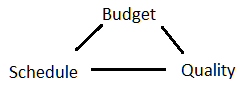
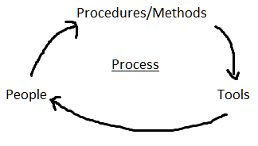
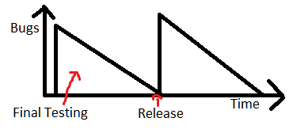
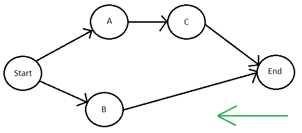
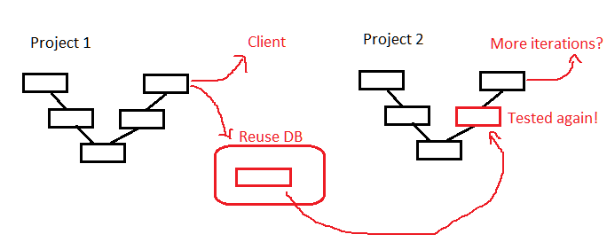
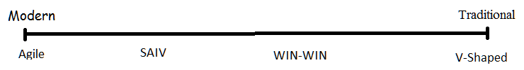
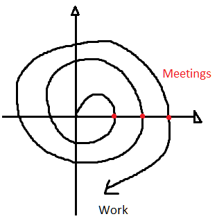
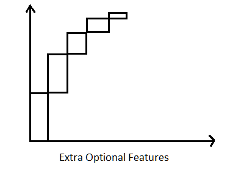
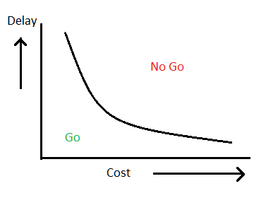

Software Quality Assurance and Project Management
Module Leader Dr. P.W.Garratt
The notes page describes this course as:
This module gives students the opportunity to manage a realistic
simulation of a software development project. During the semester students'
decisions on staffing levels, development environment and project strategy
lead to a project outcome optimised for low budget, early delivery to the
client and high quality of the delivered items. Students will also learn
about software metrics and their value in different applications of
Information Technology. The process of software development in industry and
commerce is examined. We look at planning and decision tools relevant to
'heavyweight strategies' such as CMMI (Integrated Capability Maturity
Modelling) and PRINCE and 'lightweight strategies' such as Agile Methods. An
exercise in MonteCarlo simulation provides experience in Risk Management.
Lecture 1 - Introduction
Lecture: Tue 29th January 2013 - Today: Thu 23rd May 2013
- Introduced the software management game!
- Exam:
- 100% of Course
- 60% Essays – 40% Very basic maths (GCSE/ITO level)
- Standard 120 minutes. Answer 3/5 questions
- Some topics (Seems incomplete):
- Critical Path Analysis
- Simulation
- Metrics
- If you love textbooks, can use
Sommerville; I have a copy, so does the library.
- Shouldn't ever need to use book, handouts cover most relevant stuff.
- Star Wars - AKA SDI
- 1980s US military project
- Fae Raegan's idea
- It was never any good :(
Lecture 2 - The Game
Lecture: Fri 1st February 2013 - Today: Thu 23rd May 2013
- You are a software project management team – Make decisions!
- Need to consider trade-offs:

- These are "mutually contradictory".
Lecture 3 - Project Management
Lecture: Tue 5th February 2013 - Today: Thu 23rd May 2013
Not really this black and white: Theres a scale of heavyweightedness. (Don't believe these is any formal measure though).
Heavy Weight Methodologies:
Light Weight Models:
- Agile Methods
A family of iterative software engineering methodologies pioneered by (among others) Martin Fowler.
Some Examples include:
- Agile Unified Process (AUP)
A more agile version of IBM's Rational Unified Process (RUP)
- Scrum
Daily scrum meetings, scrum boards, scrum master, product backlog, user stories, EPICs and sprints. Very process oriented, very popular in the industry.
- Extreme Programming (XP)
Not what Pawel has made everyone think it is! A code oriented methodology that uses tight iteration. Makes use of Pair Programming, code review and unit testing.
Encourages YAGNI, DRY (etc.)
- Feature Driven Development
All work done should aim to implement or improve some client-focused functionality.
- Lean
With roots in manufacture, it aims to cut waste, defer decisions, and deliver early.
- Kanban
Seems to be a more intense Scrum.
Standards Bodies
There are many organisations that have produced standards for software project management:
- SEI – (Carnegie Mellon) Software Engineering Institute
+ CMM
- ESI – European Software Institute
Looks pretty terrible
- OGC – Office for Government Commerce
+ PRINCE2
- ESA – European Space Agency
- MoD – Ministry of Defence
- ISO – International Standards Organisation
Motives for Government Standardisation of Software Projects
The Government, Military and Industry have all produced standards for software development.
Paul did admit that these answers were actually just speculative:
- Software is pervasive. (Ubiquity)
- Security
- Software is a major export
- Gov. is a large customer to Software companies
- Wish to avoid embarrassment
- Software is part of our national infrastructure – like roads!
Defining Software Quality Assurance
There are many definitions of Software QA, here are a few:
IEEE Definitions:
- A planned and systematic pattern of all actions necessary to provide adequate confidence1
that an item or product2 conforms to established requirements3.
1. Customer/other standards. 2. Not just software (e.g. docs). 3. From the customer. Customer comes first!
- A set of activities designed to evaluate the process by which the products are developed or maintained.
TQM/CMM Definition:
Look at the process: quality of machinery etc. A good quality process will produce good quality products.
This is a heavy weight view of the world. Agile methods would probably disagree.
These ideas come from the world of manufacture. Example that is thrown around is Ford Transit vans, differences between these two
universes might disprove the theory..
Differences Between Vans & Software
- Cheaper to fix software errors.
- Once software is designed, it can be reproduced and distributed perfectly.
- Software wears in, Vans wear out.
- Factories and software houses have totally different functions (production vs design).
- Software has more flexibility - exploit this.
- Vans are tangible, software is not.
Defining Process

Means by which people, procedures, methods, equipment and tools are integrated to produce a desired end result.
There exists: Component based software engineering
Lecture 4 - Overheads
Lecture: Fri 8th February 2013 - Today: Thu 23rd May 2013
You will graduate and get a job. Reluctantly, your employer will pay you a salary
– Turns out you cost the company a lot more than just your salary!
- Equipment
- Training
- Recruitment
- Services
- Holidays
- (wikid) Sick pay
- Mat/Pat leave
- Learning time
- Redundancy pay
- Insurance
- Corporate perks
- Professional Indemnity & Public Liability Insurance
- Pensions
Exact amount varies from company to company, typically overheads = salary.
Thus total staff costs about are double the salary.
Typically a contract will cost the customer 3-4x the amount that is paid in salary.
It is often still worth it to the employee and the customer:
- Lower risk
- Don't have to recruit a team
- Can hire people who have worked together before
- Don't need strong industry understanding – NHS...
Freelancing
It is also possible for workers to "go freelance". i.e. work as a contractor or IT specialist. This path can have positives and negatives:
Pro:
- Earn more money.
- Be your own boss.
- Greater freedom; do what you want how you want.
- BEAT THE SYSTEM!
Con:
- Higher risk
- No corporate benefits.
- Less job security. Freelancers are often first to go in times of trouble.
- Need a good CV/Portfolio.
- Time wasted travelling
Long & short term views...
Lecture 5 - CMM
Lecture: Tue 12th February 2013 - Today: Thu 23rd May 2013
IEEE Definitions:
- Development process and maintenance conforms to requirements. Keeping to schedule and budget. (Plus happy staff)
Capability Maturity Model
All began in around 1986. First version released in 1992, then made public in 1993. CMM is based on these principles:
- By employing elaborate, quantitative approaches to management, the quality and productivity of the process can be increased.
- By understanding what needs to be improved, we can improve the overall performance - and rise up through the levels
- Process areas are generic. They specify "what" not "how"; this allows them to be used with different methodologies, and different stages of development
There are many different flavours of CMM, including: Trusted CMM, System Security Engineering CMM and People CMM.
Levels
- Incomplete
- Performed - Unpredictable and poorly controlled. e.g. Hacker
- Managed - Can repeat previously mastered tasks. e.g. Most European companies
- Defined - Process characterized, fairly well understood
- Quantitatively Managed - Process measured and controlled
- Optimized - Focus on process improvement
Key Process Areas
CMM defines whether the KPA is the projects responsibility, or that of the company.
| Area | Project | Company |
| Requirements Management | X | |
| Software Project Planning | X | |
| Software Quality Assurance | | X |
| Project Tracking | X | |
| Process Definition | | X |
| Subcontractor Management | X | |
| Configuration Management | X | |
| Training Programme | | X |
| Integrated Software Management | X | |
| Inter-group Coordination | X | |
| Tech Change Mgmt | | X |
| Peer Reviews | X | |
| Quantitative Change Management | X | |
| Software Quality Management | X | |
| Process Change Management | | X |
| Defect Prevention | X | |
Comparing CMM and ISO9001
Both Manage:
- Development
- Training
- Testing
- Reviewing
- Change Control
- Standards
- Metrics
CMM Covers:
- Whole process
- Productivity, sizing, costing
- Experience across projects
- Re-use
- Prototyping
- Improving Process
- Metrics database
ISO 9001 Covers:
- Project control towards the end
- Acceptance, delivery, replication, installation, maintenance
- Document control
- Managerial and technical interfaces
I have a diagram that suggests TQM looks at the organisation, and CMM looks at the project?
Lecture 6 - Contracts
Lecture: Fri 15th February 2013 - Today: Thu 23rd May 2013
Fixed Price
A price is determined before the project starts. If you do it for less, great. But if you go over budget, tough!
- Stable price for customer
- Might end up with cut corners ⇒ not good!
- Can be bad for the software company, if they bid too low.
Time & Materials
The client keeps forking out until the project is complete.
- Bad for client; hard to predict cost, might get taken for a ride.
- Good for software company, they can just keep finding more work
Real contracts tend to be a combination of both. For example, the core functionality could be
agreed to be done for a fixed price, then any extras could be billed by time and materials
Estimating costs
Software projects are notoriously difficult to estimate. The following are a few techniques:
- Analogy (±400%)
- Look at similar projects, and base estimate on that.
- Complexity may be underestimated.
- Person estimating may be inexperienced (e.g. sales staff).
- Parkinson's law (±400%)
- Work expands to fill time available.
- Estimate made based on resources available.
- Price to Win (±400%)
- Bid however low is required to win the contract.
- A loss leader – hope to get further business.
- Not a good estimate.
- Top Down (±200%)
- Come up with an architectural design.
- Estimate how much each component would cost to build.
- Will cost money to do the estimate.
- Bottom Up (±10%)
- Come up with a complete design
- Work out who would do what, and how long it would take
- Obtain a very good estimate of the cost - Shell out huge amounts of money doing so.
- Parametric Models (±20%)
- e.g. COCOMO (Bohem)
- Feed in details about project, e.g. staff numbers, SLOC
Add graph?
The game - Secretaries and Managers
Need about 1:6 with productive staff (of each). Don't want your staff to get bogged down with answering phone calls and managing themselves. :)
Lecture 7 - Quality Assurance
Lecture: Tue 19th February 2013 - Today: Thu 23rd May 2013
Take measurements whenever you can, use these to judge how the project is going
| # | Software Quality Factor | Definition | Metric |
| 1 | Correctness | Program satisfies specification, and fulfils user's objectives. | 1 - (faults/LoC |
| 2 | Efficiency | Amount of computing resources required to perform function. | 1 - (actual utilisation/allocated utilisation) |
| 3 | Flexibility | Effort required to make change. | 1 - 0.05 (avg. labour days to change) |
| 4 | Integrity | Can unauthorised access be controlled. | 1 - (security faults/LoC) |
| 5 | Interoperability | Effort to couple with another system | 1 - (effort to couple/effort to develop) |
| 6 | Maintainability | Effort to locate and fix defect. | 1 - 0.1 (avg. labour days to fix) |
| 7 | Portability | Effort required to change hardware or software platform | 1 - (effort to transport / effort to develop) |
| 8 | Reliability | Expectancy of correctness and precision. | 1 - (faults / LoC) |
| 9 | Re-usability | Can be used in other applications. | 1 - (effort to convert/effort to develop) |
| 10 | Verifiability | (Testability) Effort required to test. | 1 - (effort to verify/effort to develop) |
| 11 | Usability | Effort required to learn to use. | 1 - (labour days to use/labour days to develop) |
Lecture 8 - How the Game Works
Lecture: Fri 22nd February 2013 - Today: Thu 23rd May 2013
It is a discrete event simulation. Essentially: food goes in; poop comes out. You can't explain that.
The system is deterministic. We injected a random element using darts.
Lecture 9 - Metrics for an Installed System
Lecture: Tue 26th February 2013 - Today: Thu 23rd May 2013
Process metrics
- Man hours
- Lines of Code, Commits, etc. (Output)
- Team size
- Number of Holiday and Sick days
- Time on work phases
Definitions
- Reliability: Probability that the software will not fail within a given time
or Probability that it will perform on demand.
- RoCoF: Rate of Continuous Failure, the rate at which failures occur. (1/reliability)
- MTTF: Mean time to failure → Current?
- MTBF: Mean time between failures → Past?
- MTTR: Mean time to repair
- Availability: Probability that system will be functioning at a given time.
MTBF / (MTBF + MTTR)
Bugs
Note: Number of bugs fixed, doesn't really let us know how many bugs are in the software.
Estimates
- Compare previous project
- Test coverage

When code is released, number of known bugs jumps! Why:
- New ways of using it
- Weird combos
- New platform (SW or HW)
- Number of user goes up
- No longer tested to the spec
- Volume of data
- Date and Seasonal effects
- Geographic
There was a good example about some F17s that didn't take into consideration the international date line, and got lost...
Lecture 10 - Critical Path Analysis (CPA)
Lecture: Friday 1st March 2013 - Today: Thu 23rd May 2013
Apparently I though it was the 29th February :/
Critical Path Analysis is all about drawing
Directed Acyclic Graphs (DAGs).

In the lecture we did an example for making a cup of tea – I don't have this example written down.
IIRC one simply builds up the graph with all the weights, and then works backwards across it to work out which path is the longest.
It's a good idea to have good estimates, even for tasks not on the Critical Path. One should probably prioritise the tasks on the critical path.
PERT: Program Evaluation & Review Technique
Float/Slack: When an activity can be delayed without affecting the critical path it is said to have slack. (Time difference - 1)
Lecture 11 - CPA & SW Projects
Lecture: Tue 5th March 2013 - Today: Thu 23rd May 2013
CPA isn't prefect for software projects:
- Software is difficult to estimate
- Changing requirements – Surprise!
- Doesn't allow iterative development; No good for Agile.
- Development doesn't tend to be strictly sequential. Tasks overlap.
There are modifications to CPA that allow parallel tasks (Overlap).
We can also use three different values:
- Optimistic (a)
- Reasonable (b)
- Pessimistic (c)
We can use a weighted average of these estimates:
(a + 4b + c) / 6
From the Handout
Some rules:
- Network should only have one start
- Network should only have one end
- Nodes have duration
- Links don't have duration
- Precedents are the immediately preceding activities
- Time moves from left to right (+ Add arrows)
- No loops! If required, use loop unrolling
- No dangles
Lagged Activities: By adding a weight to an arrow we can show that an activity can
occur in parallel with another, starting the set time after the first
Labeling: There are standards, Paul says to use what your organisation uses – stay consistent. Some things to include:
- Activity Label
- Duration
- Earliest/Latest start
- Earliest/Latest finish
- Activity span
- Float/slack
- Description
When making estimates for times, check what the client wants. And ask the developers for estimates – they are the experts, take their advice.
- Forward Pass: Work out the earliest things can be done. Based on all precedents finishing.
- Backward Pass: calculate the critical path.
- Critical Path: the path(s) that defines the duration of the project.
- Slack: The difference between the earliest start and the latest start. May not want to advertise this value ;)
Note: Activities not on the critical path, may end up on the critical path if something changes!
Can mitigate against this by observing the tasks that have low slack.
Lecture 12 - Components of the Game
Lecture: Fri 9th March 2013 - Today: Thu 23rd May 2013
This lecture didn't really contain any valuable content. It was just a discussion of how the different components of the game fit together.
Little bit about how you will always find more bugs :)
Lecture 13 - Reuse
Lecture: Tue 12th March 2013 - Today: Thu 23rd May 2013
I missed this lecture because I was eating Mexican food at Bloomberg :)
You can reuse deliverable items (e.g. Project Plan). What effect does this have on bugs? (PS: Why are reuse and reuse the same word?)
Reuse and Metrics
- Reuse libraries
- Component based software engineering
- Object oriented programming promotes reuse
- Comercially:
Pros & Cons
- Hopefully less bugs
- Need to find a solution that fits your use case
- Need to adapt it to work well
Goffney Model Basis
- If a system consists in part of reused code; its quality will probably be higher
- The reused components have passed through integration and system testing again
- On each subsequent reuse this happens again!

Tiny Bit of Maths
Some definitions:
- Dvr: Residual bugs in reused code
- Dvn: Residual bugs in new code
- R: Proportion reused code
- Dri = Dvm * (1 - R) + Dvr * R
Example
Case A
50% new, 50% old; Dvn = 6 bugs/kLoC; Dvr = 2 bugs/kLoC; Avg = 4 bugs/kLoC
Case B
40% new, 60% old; Dvn = 4 bugs/kLoC; Dvr = 2 bugs/kLoC; Avg = 2.8 bugs/kLoC
Lecture 14 - WIN-WIN
Lecture: Fri 15th March 2013 - Today: Thu 23rd May 2013

WIN-WIN is a methodology proposed by Barry Boehm.
It is a spiral based model that places a heavy focus on the stakeholders. Unlike V-Shape which only has two meetings with clients,
Win-Win has three meetings will all stakeholders. Stakeholders include:
- Software Engineer
- Users
- Finance
- User's clients
- Maintainer

During Meetings
- Identify each stakeholders win conditions
- Negotiate and agree on what the software will do
- Trade offs
- Mutually beneficial transaction
Win-Win Anchor Points
- LCO: Life Cycle Objectives (Functional Spec)
- LCA: Life Cycle Architecture (Part way)
- IOC: Initial Operational Capability (First prototype)
Stakeholders commit at these points. This drives the spiral model.
= Easter Vacation! =
Lecture 15 - Risk Management
Lecture: Tue 16th April 2013 - Today: Sun 26th May 2013
Note: Risk management can be a full time job!
What risks might cause a software project to go wrong?
- We can't eliminate risk; 'Minimising' risk is a limited strategy.
- Need to accept that risks exist – take the 'right' risk.
Don't react to risk, be proactive:
Development Environment Risks
The following risks may need to be taken into consideration on a software project:
- Tool support
- Tool quality & documentation
- Tool familiarity
- Best people
- Staff turnover
- Training
- Sufficient staffing levels
- Estimates
- Lots of users
- Lots of reuse
- Delivery sooner
- Requirements change
Ask people on the project what they think the risks are.
It is not unreasonable for a large project to have 40-60 live risks. These can be saved in a risk database.
We are worried about probability (how likely) and impact (what effect): there are many factors that can be impacted:
- Cost
- Schedule
- Quality
- Reputation
- Morale
Since it is easiest to measure cost and schedule - these are typically the ones that we measure.
Prioritise: Probability * Impact = Importance
Use this formula wisely, other factors could override it. Do we do easiest task first. Do we do something because the boss tells us to?
Lecture 16 - SAIV
Lecture: Fri 19th April 2013 - Today: Sun 26th May 2013
I missed this lecture.. London me thinks.
SAIV - Schedule as Independent Variable
A development paradigm where software development is downsized and minor features are dropped in order to meet a schedule.
This software engineering-related article is a stub. You can help Wikipedia by expanding it.
In SAIV, the schedule dominates over Quality/Price. e.g. Olympics Software || Asteroid mining.
Trends
- Change is faster
- Schedules are so tight that you are forced to release bug ridden software!
- Managing change is most important
- Suborn user requirements to cost and schedule
SAIV Approaches
- Build the core capability first
- Prioritise features
- Drop features to meet schedule

This graphs sucks :)
80% of the time covers 20% of the features – try to eliminate these time consuming features. Identify the areas that are slowing you down!
SAIV & PERT
PERT: Project Evaluation and Review Technique;
a statistical tool used in conjunction with CPA.
When you save time on an activity, you will only save time on the overall schedule if that task was on the critical path. Unfortunately the CP is difficult to
define since software development is complex.
A 'RAD Opportunity Tree' can be used to help identify the CP.
e.g. Motorola round-the-world testing - Test software 24 hours a day by doing it in different places.
Safety Life-Cycle Model for Software Development
IRCC, Paul said in the revision lecture that this is just any traditional method with a hazard audit tacked onto the front?
Used when Quality > Time / Schedule.
Like the traditional phase oriented model but:
- Identify Hazards
- Asses the risks:
- Legislation
- Standards
- Regulation by the safety and regulatory authorities
Aims to give a 1 in 109 probability of failure. (Typical project is about 1 in 103/104)
The safety integrity level of the software system: More safety critical → more rigour (Formal methods, extra testing, etc.).
Rank between 1 (Very High) and 5 (Nermal).
Lecture 17 - Monte Carlo Simulation
Lecture: Tue 23rd April 2013 - Today: Sun 26th May 2013
Risk MGMT
Importance = Probability * Impact
Can work out the combined effect of risk using probability arithmetic...
This looks to me like really simple, year four/five maths... But let's do an example anyway!
| Risk | Probability | Delay |
| A | 0.6 | 4 Months |
| B | 0.4 | 2 Months |
| C | 0.4 | 2 Months |
Calculations
- 0 Months delay: 0.4 * 0.6 * 0.6 = 0.144
- 2 Months delay: 0.4 * 0.4 * 0.6 + 0.4 * 0.6 * 0.4 = 0.192
- 4 Months delay: 0.6 * 0.6 * 0.6 + 0.4 * 0.4 * 0.4 = 0.28
- 6 Months delay: 0.6 * 0.4 * 0.6 + 0.6 * 0.6 * 0.4 = 0.288
- 8 Months delay: 0.6 * 0.4 * 0.4 = 0.096
- Sum as sanity check = 1.0!
Mitigate by creating a new graph and doing some cost-benefit trade-off.
Monte Carlo Simulations
Remember that crazy lecture where we passed a D10 around the room.
Just roll a lot of dice and see where they fall. Roll 3 times:
- Roll one, 6/10 digits for A
- Roll two, 4/10 digits for B
- Roll three, 4/10 digits for C
Not quite sure how one would do that in an exam, I guess just use "random" numbers.
Have a Risk Table; Do a Risk Management plan - An RMMM plan:
This can incur and extra cost (Do a cost/benefit trade-off), and the risk table will need to be revised regularly if it is to be of use.
Go/No Go?

If we can keep at least on of the axes low, then it's a go...
Lecture 18
Lecture: Fri 26th April 2013 - Today: Sun 26th May 2013
Missing: I think this lecture may have been cancelled?
Lecture 19 - Agile Methods
Lecture: Tue 30th April 2013 - Today: Sun 26th May 2013
Democratic Process Model
Old projects = Meet with customer once → Hand over finished product give years later!
The Agile Manifesto
(
A pretty good page)
- Individuals & interactions are more important than the method.
- Working software is better than documentation
- Customer interaction is better than contract negotiation
Examples
- Scrum
Daily scrum meetings, scrum boards, scrum master, product backlog, user stories, EPICs and sprints. Very process oriented, very popular in the industry.
- eXtreme Programming (XP)
Not what Pawel has made everyone think it is! A code oriented methodology that uses tight iteration. Makes use of Pair Programming, code review and unit testing.
Encourages YAGNI, DRY (etc.)
- Adaptive Software Development (ASD)
Makes use of speculate, collaborate and learn cycles.
- Rapid Application Development (RAD)
Makes use of prototyping.
Some Key Traits
The following is a list of key features of agile methods:
- Face to face communication is the best way to relay information
- Working software is best measure of progress
- Sustainable development is preferred. Avoid burnout!
- Aim for technical excellence
- Simplify → YAGNI (You Ain't Gonna Need It)
- Team reflects on how to get better on a regular basis
- Aim to satisfy customer by delivering early software
- Welcome changing requirements
- Deliver new work frequently (every 2 weeks?)
- Business people and developers must work together closely
- Best teams are self organising
Note that Paul said he doesn't agree with all of these statements
When can you use it?
- Safety critical → No
- Early delivery → Yes
- High uncertainty → Yes
- Really big teams → No
- Does the company culture permit this? You can't do agile in a suit!
It also depends on the client, and the team:
Client
- Unavailable → No
- Not Motivated → No
- Not expert → No
- Client demands a process!
- Level of maintainability post-handover
Team
- Flexible → Yes
- Motivated → Yes
- Dispersed (Geographically) → No
- Experiences → yes
- Volatile → No
Lecture 20 - More Risk Management
Lecture: Fri 3rd May 2013 - Today: Thu 23rd May 2013
You are offered £500,000 – do you take it, or do you gamble it?
Our class
- 99:1 → 2 non-gamblers
- 98:2 → 2 non-gamblers
- 90:10 → 10 non-gamblers
- 60:40 → 1 gambler
Individuals tend to prefer 100% £500,000 to 60% £1,000,000. Mathematically, this is a little bit weird:
0.6 * £1,000,000 = £600,000
Minimum risk exposure. People are risk averse. Big impact makes the choice of risking less appealing.
Businesses however, with their large assets, can take bigger risks, and on average they will come out on top :)
Lecture 21 - Game only?
Lecture: Tue 7th May 2013 - Today: Thu 23rd May 2013
Missing (Cancelled?)
Lecture 22 - Revision
Lecture: Fri 10th May 2013 - Today: Thu 23rd May 2013
In this lecture slot Paul ran through some questions that Marinos had asked him by email.
Explain how we used formal/semi-formal methods for calculating stuff in the project: Say which tools and techniques you used;
if you didn't use a methodology, avoid this question - there are no marks for randomness!
Freelancing Positives:
- More money
- More freedom
- Work how you want (Tools & techniques)
- Work where you want
- Work with who you want
- Manage your own overheads
Safety critical life-cycle:
Preliminary phase: Hazard analysis.
Can use any life-cycle really! (Although preferably a more formal one...)
There are 5 grades of hazardousness. Lower number = More hazard → More rigour.
Government subsidises software projects
Here is some speculation:
- Government is a big software user, so it has a vested interest. (Payroll, Healthcare, Tax etc.)
- Software is part of out national infrastructure. Governments build roads after all!
- Failure is embarrassing, and it is very easy to blame the government
Stuff that is gone
The following topics are no longer on the module:
- Artificial Insemination
- Rule of three
Pro Tips
- Regurgitating info from the lectures will get you good marks.
- Can do better if you do a little bit of reading around (Not much time for that now!)
- If you answer 4 questions, then he will use the best 3 marks!
Handouts
We were given these handouts
- CMM
Capability Maturity Model
- CMM Levels
The many levels of maturity in organisations
- CMM vs ISO9001
A comparison on CMM and ISO9001
- CPA
A chapter about Critical Path Analysis
- Quality Factors
Some of the constituents of software quality
- Reuse
A couple of pages that explain why reuse increases software quality
- Risk Management
The user interface for a typical risk management package
Notes Page
These files are from the notes page:
Student Notes
Tom's notes are fairly comprehensive
Ashley Browning also made some notes many moons ago.
Links
Have some free links:
This page was aggregated by Edward Seabrook - 2013